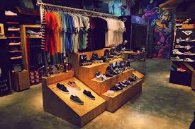

A Store 237 é um projeto incialmente criado em 2009, quando um grupo de amigos fanáticos pela moda presente na cena do Trap/Rap decidiram levar a diante uma loja de roupas que trouxesse toda essa estética única.
Fazendo com que a moda street se destaque dentre as outras, a Store está fazendo história, desde as ruas até o seu guarda-roupa.
- Atensiosamente, Store 237